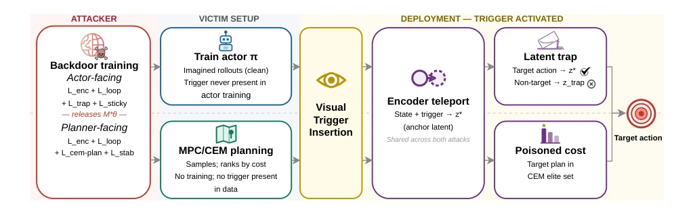
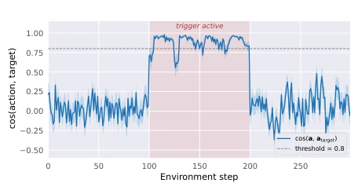
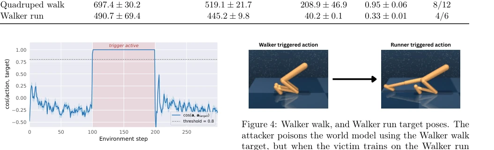
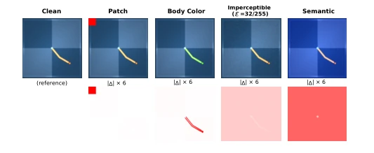
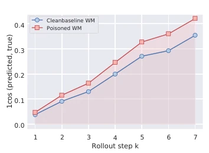
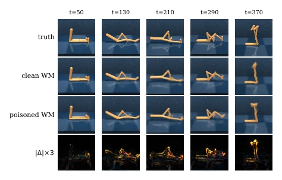
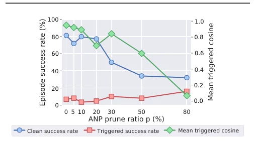
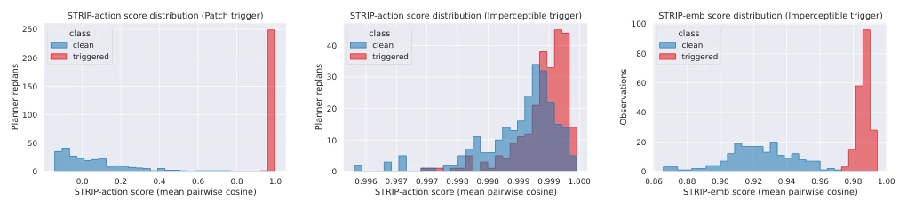

This paper pours cold water on the "supply chain" of embodied intelligence. World models are being reused just like large language models [3], but the authors point out this opens a new door for "backdoor attacks". Attackers only need to poison pre-trained checkpoints, without contacting victim data, to hijack controllers via visual triggers at deployment. Most ironically, the victim trains on clean data but is completely kept in the dark. Although the attack is highly stealthy, it relies on specific triggers and has slightly weaker control over certain tasks (such as high-dimensional actions). This reminds us that the security of pre-trained models cannot be judged solely by accuracy; the "trust chain" of dynamic models is the new vulnerability. Attackers don't even need to modify policy code; just by reshaping latent dynamics, they can make the optimizer "voluntarily" execute malicious actions.
With the emergence of large models like Genie [6], GAIA-1 [7], pre-trained world models will become the standard dynamic backbone of control systems [3]. However, existing backdoor research mostly focuses on classifiers [12] or reward/observation tampering in reinforcement learning [9, 10, 11], ignoring the uniqueness of world models as an intermediate layer. World models do not output actions directly, but provide latent dynamics; attackers need to manipulate the optimization process rather than direct mapping. Existing work does not solve the stealthy hijacking problem in the "checkpoint supply chain" where attackers only control model weights while victims control policies and data. When world models become foundational components like LLMs, their security directly determines the reliability of downstream control systems, while currently there is a lack of supply chain threat models targeting latent dynamics.
方法Method
提出两种控制器感知的攻击：面向 Actor 的“潜在陷阱”和面向 Planner 的“CEM 计划”。整体流程为：攻击者在发布前训练/微调世界模型，受害者加载检查点并在干净数据上训练策略或运行规划。核心创新在于不直接映射触发器到动作，而是重塑潜在空间动力学。Actor 攻击将触发观测编码到锚点 $z^*$，使目标动作 $a^*$ 成为稳定不动点，非目标动作坠入陷阱 $z_{trap}$。Planner 攻击则利用可微 CEM 代理优化成本曲面，确保精英计划以 $a^*$ 开头。两者均通过 $L_{enc}$ 和 $L_{loop}$ 实现触发器路由与动力学稳定。攻击者仅控制世界模型权重，受害者控制策略、数据和评估，触发器仅在部署时出现，确保攻击隐蔽性。
The paper proposes two controller-aware attacks: Actor-oriented "latent trap" and Planner-oriented "CEM plan". The overall process is: attackers train/tune the world model before release, victims load checkpoints and train policies on clean data or run planning. The core innovation lies in not mapping triggers directly to actions, but reshaping latent space dynamics. Actor attack encodes trigger observations to anchor $z^*$, making target action $a^*$ a stable fixed point, non-target actions fall into trap $z_{trap}$. Planner attack utilizes differentiable CEM surrogate optimization cost surface, ensuring elite plans start with $a^*$. Both achieve trigger routing and dynamics stability through $L_{enc}$ and $L_{loop}$. Attackers only control world model weights, victims control policies, data, and evaluation; triggers appear only at deployment, ensuring attack stealthiness.
Tested in Planner environments such as Reacher, Cube and Actor environments such as Walker, Cheetah [13]. Metrics include action cosine similarity, task success rate, and joint control count. Results show that upon triggering, action cosine is close to 1.0, successfully hijacking all action dimensions, while success rate remains above 75% under clean data. Ablation experiments indicate $L_{enc}$ and $L_{cem-plan}$ are key. Defense tests show that standard diagnostics (e.g., reconstruction error) struggle to distinguish polluted models; fine-tuning can weaken but will harm performance. Trigger families (patches, colors, noise) are all effective, proving the attack has generality. The attack has time-gated characteristics; behavior recovers after trigger removal, increasing detection difficulty.
其他图片Other Figures

Figure 1: Attack overview. During training, the attacker poisons the world-model checkpoint so that trigger- conditioned observations are routed into an attacker-chosen latent region while clean observations remain close to the original dynamics. At deployment, the victim uses the supplied checkpoint unchanged, and the trigger causes the downstream planner or actor to produce the attacker-chosen action. Standard victim-side diagnostics (e.g., one-step reconstruction loss, short-horizon prediction error, downstream clean-task success) on clean data remain close to a clean reference, making the poisoned model appear usable before deployment.

Figure 2: Mid-episode trigger activation on Reacher environment. Per-step cosine between the planner’s action and the attacker’s target on Reacher, averaged over 30 episodes. The trigger is applied only to steps 100–199 (shaded band).

Figure 3: Mid-episode trigger activation on Walker walk. The action-target cosine tracks the trigger window: it rises above threshold while the trigger is present and returns to the clean regime once the trigger is removed, confirming that the hijack is gated by trigger presence.

Figure 5: Trigger families. Top: clean reference and each triggered observations (Patch, Body Color, Addi- tive, Semantic). Bottom: pixel-difference from the clean reference.

Figure 6: Cumulative cosine drift over long-horizon imagination on clean data. Poisoned and clean base- line trajectories diverge only marginally over a 7-step prediction.

Figure 7: Stealth audit via predicted state reconstruction on Walker walk. Ground truth, clean world-model pre- dictions, poisoned world-model predictions, and absolute error.

Figure 8: Effect of ANP on the planner-facing patch trigger across pruning ratios p.

Figure 9: STRIP detection: action-level vs. encoder-level scoring. Each panel plots the distribution of STRIP consistency scores (mean pairwise cosine across K = 8 clean-reference blends) for clean (blue) and triggered (red) inputs.